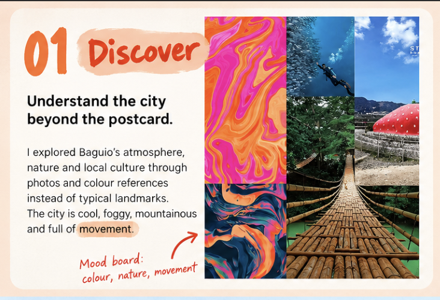
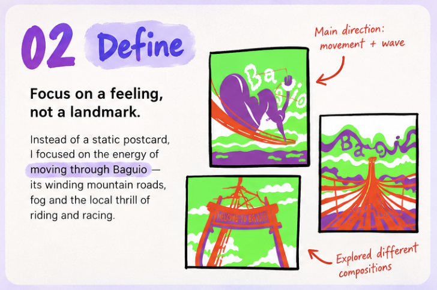
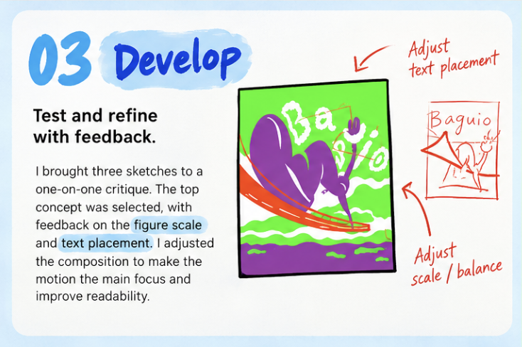
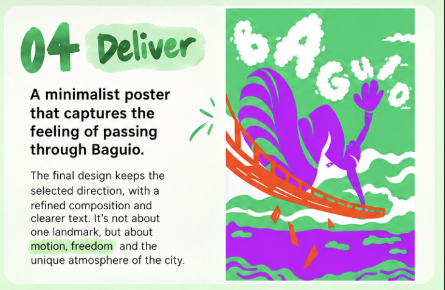

Baguio — A City Nobody Asked About
For a minimalist design course, I got handed a city most people have never heard of — Baguio, the "Summer Capital" of the Philippines. Instead of drawing a postcard, I tried to capture what it actually feels like to move through the place: the fog, the mountain roads, the energy locals bring to them. Three sketches, one survivor, a professor's red ink, and a poster that's more about motion than about any single landmark.
The brief
Beyond the postcard
The brief: design a minimalist travel poster for an assigned city — but skip the postcard move, no landmark you could Google in five seconds.
01 / Discover
Finding the city beyond its landmarks
My city came with a built-in joke: Baguio, the "Summer Capital" of a tropical country — a whole city that exists because it's the one place that isn't hot. It sits in the Cordillera mountains, Ibaloi land long before anyone called it a hill station.
The obvious poster writes itself — strawberry farm, pine trees, a cathedral. I didn't want to make that poster.

02 / Define
Draw the movement, not the monument
Most people get into Baguio via Kennon Road, a winding mountain highway with a giant Lion's Head statue partway up — locally, Ulo ng Leon — and it's not just scenery, it's a road people actually ride and race on.
What stuck with me is that the road isn't a backdrop for locals — it's something they move through fast, on purpose, for fun. That energy is what got under my skin. I didn't want a poster of Baguio sitting still; I wanted that same feeling in the image. So instead of drawing a place, I drew motion: a figure riding something wave-shaped.

03 / Develop
Three sketches, one direction
Choosing the sketch
I brought three sketches into a one-on-one crit. Two got cut — my own read is that they didn't have the city's personality or any sense of movement in them. The one that survived was also, conveniently, my favorite already.
Refining scale and type
The professor marked this version up directly on my Procreate file — a note on sizing, a note on text placement. That exact file is gone now — Procreate quietly clears undo history after a while, and the annotations went with it.
My best guess: the sizing note rebalanced the figure against the wave so the motion reads as the main event; the text note moved "BAGUIO" out of a spot where it fought the artwork into one where both can be read cleanly.

04 / Deliver
A feeling of passing through
The final poster doesn't wander far from the picked sketch — the notes were a tune-up, not a rebuild. One figure rides a purple wave-like shape across green, "BAGUIO" lettered in a soft, cloud-ish form above. No landmark anywhere in it — just a feeling of passing through the place.
A wave with a different mood
A couple of choices worth calling out on purpose: a figure riding a dominant wave is the same basic setup as Hokusai's The Great Wave — a person against something much bigger, mood flipped from "about to drown" to "having a great time."
Lettering you feel before you read
The cloud-like lettering borrows from 1960s psychedelic poster type, designed to be felt before it's read — which tracks for a city whose personality is fog and mountain curves rather than one photogenic thing.
